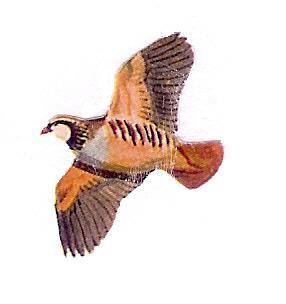

{{ section }} · {{ topic }}
Question {{ number }}

{{ stem }}
{{ item.letter }}
{{ item.text }}
Right
Wrong
{{ holdLabel }}
Hint
Language notes
No language notes for this question.
{{ note.pt }}
· {{ note.en }}
{{ note.note }}
Nudge
{{ nudge }}
Report:
English is off
Hint is off
Next
Home
Practice
Exam
Progress